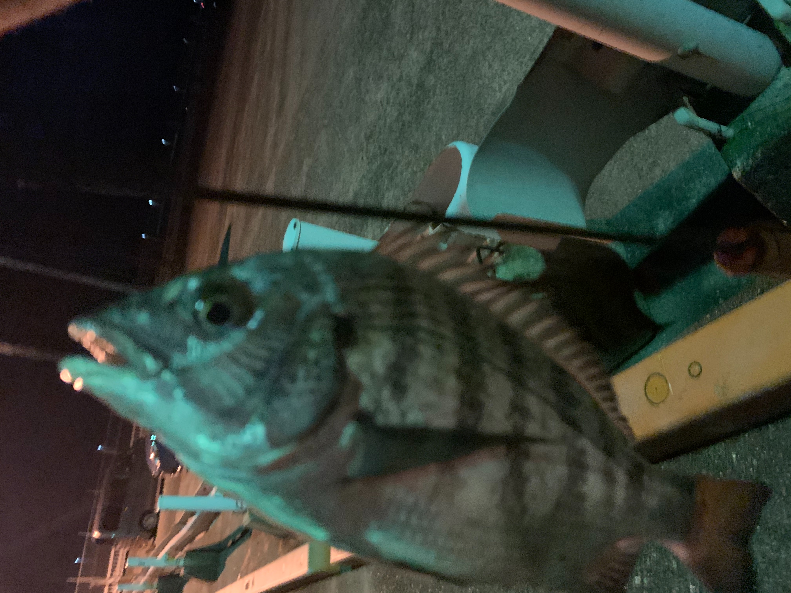

ある雨上がりの水が濁っていた日に○○港に出かけました。
ここでタチウオが大量につれるとの情報を知り、ワームでタチウオを狙いに来ました。
よしっ ！！つるぞーー！！！
一番釣れる外灯下のあの角のところ
先行者がいましたー。

隣に入らせてはくれなさそうだったので、少し離れて釣っていましたが、
雨のあとで濁っていたからなのか数回の反応があっただけで一匹しかつれませんでした。
場所を変えて釣りをしよっと・・・
場所を変えたら目の前にフナ虫がいました。
活性の悪いときはフナ虫のほうが釣果がいいかもしれない。
動きが素早いフナ虫を素早く捕まえることに成功しジグヘッドに刺して落とし込み。
すると数秒で反応が・・・
釣れたのはメイタ君でした。写真では大きく見えますが、15センチくらいでしょうか
でもつれてよかった。
そのあとは全く反応がなかったのでタチウオ一匹とメイタ一匹の釣果となりました。
まあ楽しかったからいいや。
Comment Form is loading comments...